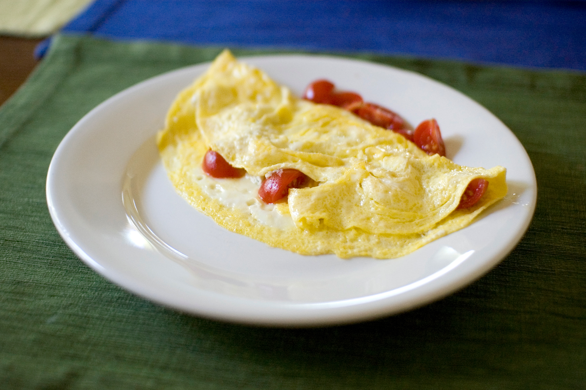

Omelette
Ingredients
- Eggs
- Salt
- Butter
- Cheese
- Toppings of your choice
Steps
- Beat eggs - in a small bowl, add 2 eggs with a pinch of salt and beat with a fork or whisk until frothy.
- Heat skillet - Place a non-stick pan over medium-low heat and melt in butter. Once melted and lightly bubbly, pour in egg mixture.
- Flip - Once eggs are mostly set and the omolette slides easily around the skillet, get a spatula underneath and flip. Turn off heat.
- Add toppings and fold - Add in your cheese and any other additional toppings, then fold the omelette in half. Slide onto a plate to serve.
- Garnish - Add a sprinkle of pepper, parsley, and/or chives.